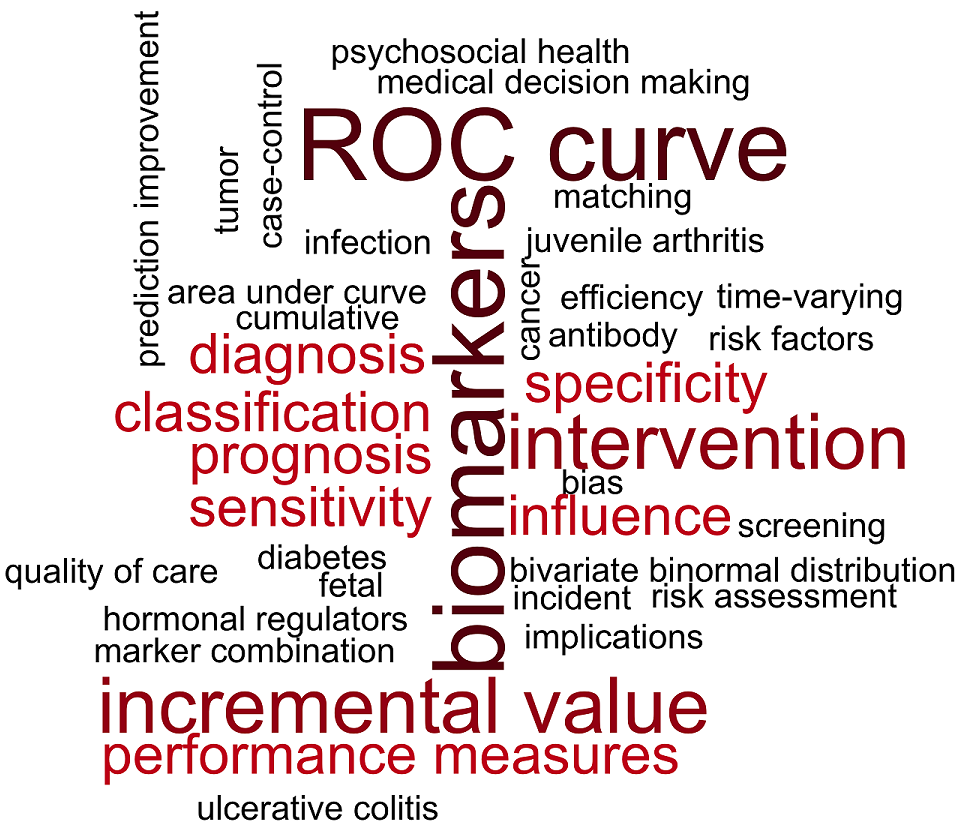

Articles in Refereed Journals
[
My Google Scholar Profile]
- Weinert C, Cudney S, Comstock B, Bansal A (2013). A Computer-Based Intervention for Illness Self-Management among
Rural Women with Chronic Health Conditions: A Randomized Parallel-Group Study. Canadian Journal of Nursing Research, in press.
- Salk JJ, Bansal A, Lai LA, Crispin DA, Ussakli CH, Horwitz MS, Bronner MP, Brentnall TA,
Loeb LA, Rabinovitch PS, Risques RA (2013). Clonal expansions and shortened telomeres in
non-dysplastic mucosa are associated with neoplasia in early-onset, but not late-onset, ulcerative
colitis. Inflammatory Bowel Diseases, in press.
- Novotny SC, Perusek GP, Rice AJ, Comstock BA, Bansal A, Cavanagh, PR (2013).
A Harness for Enhanced Comfort and Loading during Treadmill Exercise in Space.
Acta Astronautica, in press.
[link]
- Bansal A, Pepe MS (2013). When Does Combining Markers Improve Classification Performance and What Are Implications for Practice?
Statistics in Medicine, 32(11): 1877-1892.
[link]
[2011 Young Investigator Award, ASA Section on Statistics in Epidemiology]
- Bansal A, Pepe MS (2013). Estimating Improvement in Prediction with Matched Case-Control Designs.
Lifetime Data Analysis, 19(2): 170-201.
[link]
- Kerr KF, Bansal A, Pepe MS (2012). Further Insight Into the Incremental Value of New Markers: The Interpretation
of Performance Measures and the Importance of Clinical Context.
American Journal of Epidemiology, 176(6): 482-487.
[link]
- Larson-Meyer DE, Palm S, Bansal A, Austin KJ, Hart AM, Alexander BM (2012).
Influence of Running and Walking on Hormonal Regulators of Appetite in Women.
Journal of Obesity, vol. 2012, Article ID 730409.
[link]
- Adams Waldorf KM, Gravett MG, McAdams RM, Paolella LJ, Gough GM, Carl DJ, Bansal A, Liggitt HD, Kapur RP, Reitz FB, Rubens CE (2011).
Choriodecidual Group B Streptococcal Inoculation Induces Fetal Lung Injury without Intra-Amniotic Infection and Preterm Labor in Macaca Nemestrina.
PLoS ONE 6(12): e28972. doi:10.1371/journal.pone.0028972
[link]
- Weinert C, Cudney S, Comstock B, Bansal A (2011). Computer Intervention Impact on Psychosocial Adaptation of Rural Women with Chronic Conditions.
Nursing Research, 60(2), 82-91.
[link]
- Soltes G, Hust M, Ng K, Bansal A, Field J, Dubel S, Cha S, Wiersma EJ (2007).
On the Influence of Vector Design on Antibody Phage Display.
Journal of Biotechnology, 127(4), 626-37.
[link]
Book Chapters
- Bansal A, Pepe MS (2013). Estimating Improvement in Prediction with Matched Case-Control Designs.
In MLT Lee, M Gail, G Satten, T Cai, A Gandy, R Pfeiffer (Ed.) Risk assessment and evaluation of
predictions. Springer.
Submitted Manuscripts
- Bansal A, Heagerty PJ. Evaluating the Time-Varying Performance of Prognostic Markers for Survival Outcomes.
- Asher C, Hibbard D, Morcos M, Bansal A, Comstock B, Pellegrini C, Shankaran V, Patel S. Tumor Length as a Prognostic Factor in Esophageal Cancer Management.
- Khandelwal N, Hough CL, Bansal A, Veenstra DL, Treggiari MM. Long-term Survival in Patients with Severe Acute Respiratory Distress Syndrome and Rescue Therapies for Refractory Hypoxemia.
- Solorio R, Bansal A, Comstock B, Ulatowski K. Impact of a Chronic Care Coordinator Intervention on Diabetes Quality of Care in a Community Health Center.
- Vanderhoeven J, McAdams RM, Beyer RP, Bammler TK, Farin FM, Rajagopal L, Kapur RP, Bansal A, Spencer M, Deng M, Gravett MG, Rubens CE, Adams Waldorf KM. Group B Streptococcal Infection of the Choriodecidua Induces Dysfunction of the Cytokeratin Network in Amniotic Epithelium: A Pathway to Premature Membrane Rupture.